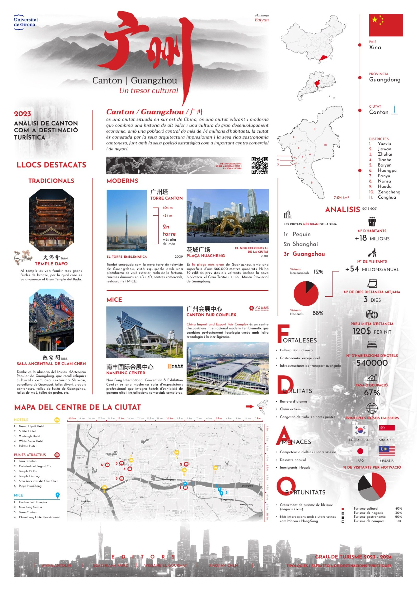

Graphic Design Portfolio
Brand systems, information design, and research-led visual communication.
Selected university projects reframed as portfolio case studies, with a focus on clear concepts, structured layouts, and practical visual applications.

COFFEVEL
Coffee and travel agency identity extended across logo, print, advertising, packaging, and merchandise.
Brand Identity
Guangzhou
A tourism destination infographic poster combining maps, landmarks, data, and cultural references.
Information Design
Chinese Students in Catalonia
A research board translating survey findings into visual strategy for tourism destination management.
Research DesignAbout
I am a visual communication designer interested in brand systems, information design, and cross-cultural storytelling. This portfolio organizes three university projects into case studies that show concept development, layout discipline, visual hierarchy, and design application.